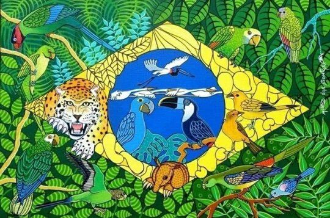
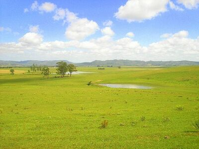
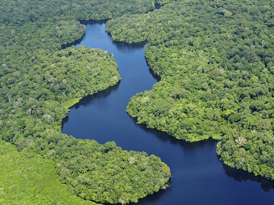
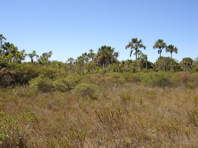

Afinal, o que é biodiversidade?

A diversidade biológica (biodiversidade) se refere à abundância e variedade dos seres vivos existentes na biosfera, incluindo todos os animais e plantas em nosso planeta. O termo surgiu em 1985 pela junção de "diversidade" e "biológica", crescendo rapidamente em popularidade desde então e hoje sendo bem popular quando se fala de preservação ambiental
Apesar de contrariar o que muita gente pensa, até mesmo lugares como desertos e tundras apresentam diversidade biológica, isso porque o termo não está limitado a todas formas de vida, também se referindo aos ecossistemas, isso é, as inter-relações entre espécies. Toda a diversidade encontrada no gene de cada ser vivo possibilita a adaptação da vida até mesmo em lugares com temperaturas extremas, como mencionado.
Megadiversidade no Brasil

Megadiversidade é um termo correspondente a uma imensa riqueza de biodiversidade. Atualmente, diversos países como China, África do Sul, Índia entre outros são considerados nações megadiversas, totalizando 17 países com esse "título", entretanto, o Brasil é considerado o país com a maior biodiversidade do planeta, tendo mais de 115 mil espécies de animais e quase 50 mil de espécies de fungos e plantas. Desse grande total, sua grande maioria se localiza no bioma Amazônia, o qual ocupa quase metade do território brasileiro.
Diversidade por Bioma
Cada região possuí biomas cheios de variedade biológica, sinta-se a vontade para explorar cada uma delas e descobrir espécies nativas que estão espalhadas pelo Brasil.
| Pampa | Mata Atlântica | Pantanal |
|  |  |
 |
| Caatinga | Amazônia | Cerrado |
 |
 |  |